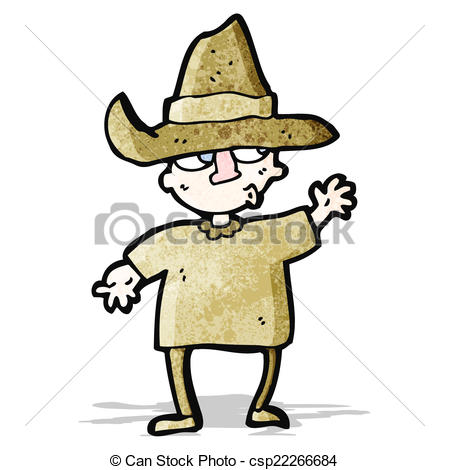

Tulipános Lókötő
Professional Feather-Cornerer
from
Dinnyésmerciháza-Felső, HU

I am a young, talented and ambicious feather-cornerer and an old timer Mercedes fanatic. I live for my profession, and am practicing throughout it the country. From the collected plume I create beautiful hand made pillows and bedsheets. I also like fish-soup.